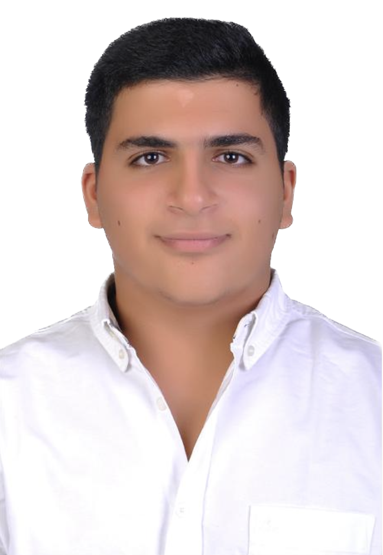

The Allegiance!
Born in 2007, achieving high goals throughout his growth Mourad Ghaly lived in Kuwait for 12 years, attending “Lycée Français du Koweït” (French School of Kuwait), where he got instructed most of the values he uses today, it is actually his initial maternal sanctuary which he actually consider the reason for all of his success. Mourad’s entourage was widely cosmopolitan, having dealt with diverse cultures and beliefs which actually gave him the opportunity to virtually embark the world. This educative opening to the world made him able to master “English”, “French” and “Arabic” languages, not to forget his theoretical level in “German”. Mourad lived his scholar journey having maintained exemplary behavior. But aside from courtesy Mourad’s friendliness lies in the heart of his intellectual power and thanks to that he made sure to have befriended his teachers/mentors. But as everything ends, Mourad had leave his “playground” to make room for new beginnings in his parental country and as of that, he sets foot in his school for the last time in tears by the end of 2019. He states in French to pay tribute “Le LFK serai toujours la source principale de mon ascendance, c’est où tout a commencé, c’est un parcours qui me permet de retracer mes pas d’enfance, c’est mon Lycée et il le serai toujours”. He also adds “C’est l’endroit qui m’a appris les notions de la diplomatie mais surtout les notions de la formalité”.
In January 2019, Mourad lands in Alexandria, where he starts a new chapter of his life in a whole new world, new people, new environment. 2019 was mostly the year where Mourad hadn’t only focalized himself academically but also socially. Mourad’s deep social understand lead him to realize that his class is heavily fragmented into various groups which completely normal, but what made his case very intricate was that it is hierarchal, every group asserts dominance on the other, what Mourad wanted was to be part of what he calls the “upper social class” to be compatible with this extreme leadership values, he always wants to be part of the best, with very hard adaptations, he reaches his goal.
Until the pandemic hit and lockdown captivates his soul, Mourad’s precautions were extreme to face the virus, which not only limited his exposure to society but banished him from it, all his “internal” social progress was lost, he became very much attached to his “home” that it affected his mental programming in a way where he didn’t even want to get out. But someway in early 2021 he pushed himself knowing deep inside that this is harming his future, he started to get more re-immersed except when a big problem faced him “trust-issues”, Mourad was analyzing his friends’ words where he also took time to analyze the nuance of their voice while in dialogue with them, Mourad lost many friends and took the time to realize that he was wrong and that he should find remedies for this prominent issue, he continues with very low social thrust almost null but considerable, what he wanted was to train his brain that trust issues shouldn’t impact him.
When healing period elapses, in September 2022, his trust issues start to subside and feels he begins to get out of harms way. He starts slowly knowing that he is amongst the “higher social class” which replenishes his social energy, he now slowing ascends constantly, making 2022 a rebound year adapting to a very higher extent but also undoing the effects of quarantine. By the end of this year he completes his DNB(Diplôme National du Brevêt) diploma having earned his well-deserved “Mention Bien” or “with honors” an excellent conclusion to his academic era as a “middle school pupil”
In September 2023, Mourad grew, he is now a sophomore ready to take on the last fragment before diving to real life, he is actually still immersed in the same phase where he wishes to do excellent in this year’s French Bac session (Anticipated French Examination).To this date, he is actually mainting four curcial profiles (academic, social, extracurricullar, ethical) at an exemplary level, he knows how to distribute allocated energy/time to face his challenges based on their weight and pressure.

"It's thanks to my father"
-Mourad Ghaly